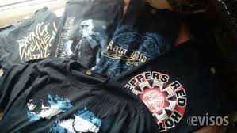

¿Que es la sublimacion?

La sublimacion es el proceso de impresión que se produce cuando la tinta pasa del estado sólido (tinta sobre el papel) al estado gaseoso, consiguiendo penetrar en el producto y perdurando en el material permanentemente.
Los productos sobre los que se aplica esta técnica, son productos especiales, de materiales específicos y que deben tener aplicado un barniz/coarting especial que permite la sublimación.
Mediante esta técnica, se consigue que la impresión penetre de manera permanente en el material, proporcionando así que los colores se mantengan vivos y permiten ser lavados infinidad de veces sin perder su calidad.
Ventajas
- Se adapta a todo tipo de superficies, permitiendo sublimar superficies que no son planas.
- Impresión duradera con efecto de gravado en el material.
- La impresión no se despega del producto ni se cuartea.
- Proceso fácil y de rápido aprendizaje.
- Bajo coste de producción.
- Buena calidad de la impresión, con colores vivos y contrastados.
- En impresión en 3d como es el caso de las carcasas, abarca todo el producto sublimado.
- Debido a la perdurabilidad, la mayoría de los productos se pueden lavar en el lavavajillas, con un estropajo o meterse en el microondas, en el caso de tazas y vasos.